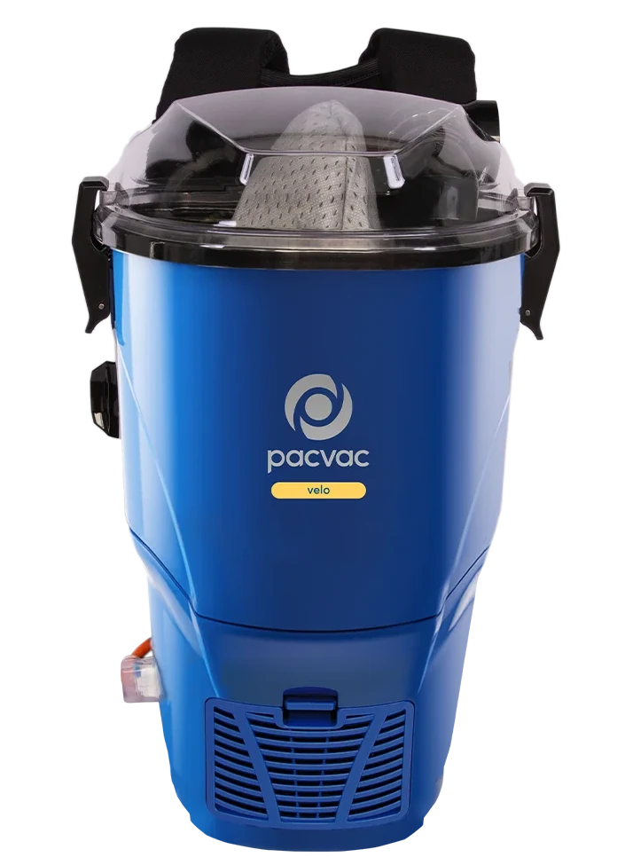
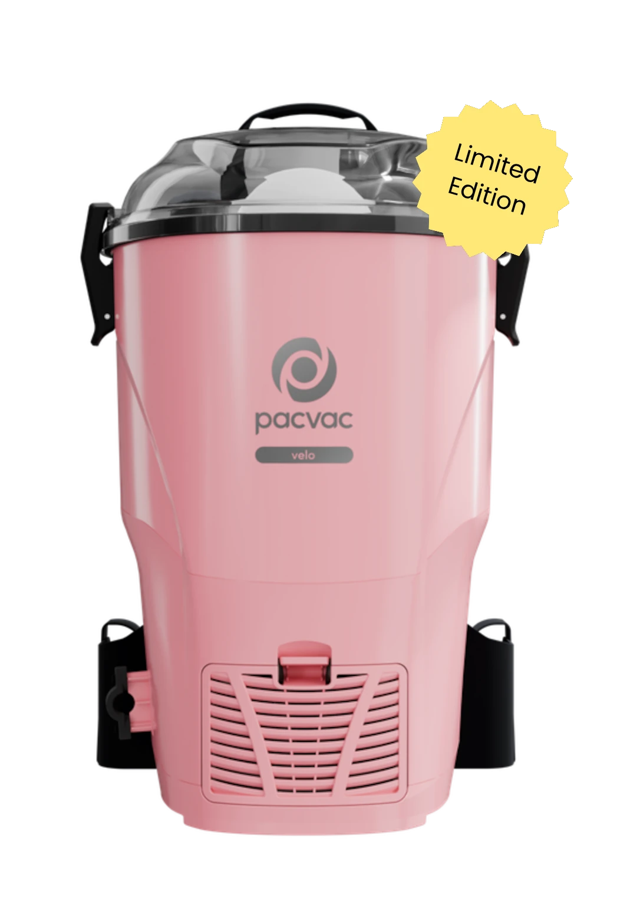

Velo - Pieni ja pippurinen!
TUOTEKOODI: VB002VE01A01 | Johdollinen
Kevyt ja tarpeeksi pieni mahtuakseen ahtaisiin tiloihin, Velo on monipuolinen siivousväline sekä ammattilaisille että niille, jotka haluavat saavuttaa ammattimaisen laadun siivouksessa kotona.
Verkkovirralla toimiva Velo on yksi markkinoiden kevyimmistä reppuimureista. Sen 900 W:n moottori tuottaa voimakkaan imutehon kompaktissa, vain 3,9 kg painavassa laitteessa.
Velon vakiovarustukseen kuuluvat ergonomiset Ecoharness-valjaat, joiden paksu pehmustus takaa entistä mukavamman istuvuuden. Valjaat on valmistettu vähintään 50-prosenttisesti kierrätetystä rPet-materiaalista.
Velo on varustettu H13 HEPA Hypercone™ -suodattimella, joka tarjoaa nelivaiheisen suodatuksen. Se suodattaa tehokkaasti 99,95 % jopa 0,3 mikronin kokoisista pölyhiukkasista, taaten puhtaamman sisäilman.

Miksi valita verkkovirralla toimiva Velo?
- Rajoittamaton käyttöaika: Siivoa suuria tiloja ilman taukoja tai akun lataamista.
- Huippukevyt rakenne: Vain 3,9 kg paino tekee liikkumisesta vaivatonta.
- HEPA H13 -suodatus: Optimaalinen poistoilman puhtaus herkkiinkin kohteisiin.
- Ecoharness-valjaat: Markkinoiden johtava ergonomia ja kestävä kehitys kohtaavat.
Sama suorituskykyinen Velo – nyt rajoitettu erä vaaleanpunaisena!
TUOTEKOODI: VB002VE01A01 | Johdollinen
Tämä rajoitetun erän vaaleanpunainen Velo yhdistää ikonisen tyylin ja ammattitason tehon. Se on Pacvacin kysytyin malli, joka soveltuu täydellisesti niin kotiin kuin kevyeen ammattikäyttöön.
Vain 3,9 kg painava Velo on yksi markkinoiden kevyimmistä reppuimureista. Kompaktista koosta huolimatta 900 W moottori ja 18 metrin johto tarjoavat vaikuttavan 1158 m2 siivousalan ilman pistorasian vaihtoa.
Käyttömukavuudesta vastaavat ergonomiset ja pehmustetut Ecoharness-valjaat, jotka on valmistettu vähintään 50-prosenttisesti kierrätetystä rPet-muovista.
H13 HEPA Hypercone™ -suodatin takaa puhtaan sisäilman suodattamalla 99,95 % jopa 0,3 mikronin pölyhiukkasista. Laitteessa on kätevä vedenkestävä virtakytkin ja mukana toimitetaan monikäyttöinen All purpose -lattiasuulake. Syväpuhdistukseen ja lemmikkitalouksiin suosittelemme lisävarusteena saatavaa Turbo-suulaketta.
Huom: Vaaleanpunainen Velo on rajoitetun ajan erikoismalli. Tuotteita on saatavilla vain nopeimmille – tilaa omasi nyt, ettet jää paitsi tästä uutuudesta!

Miksi valita verkkovirralla toimiva Velo?
- Rajoittamaton käyttöaika: Siivoa suuria tiloja ilman taukoja tai akun lataamista.
- Huippukevyt rakenne: Vain 3,9 kg paino tekee liikkumisesta vaivatonta.
- HEPA H13 -suodatus: Optimaalinen poistoilman puhtaus herkkiinkin kohteisiin.
- Ecoharness-valjaat: Markkinoiden johtava ergonomia ja kestävä kehitys kohtaavat.
Velo go - Kompakti, langaton ja kevyt
TUOTEKOODI: VB002VG01A01 | Akkukäyttöinen
Velo go on kompakti ja kevyt akkukäyttöinen reppuimuri. Se on varustettu tehokkaalla moottorilla, joka tarjoaa käyttäjälle täydellisen
liikkumisvapauden ja maksimaalisen tuottavuuden edellyttämän tehon.
Velo go on riittävän tehokas suurten toimitilojen siivoukseen ja tarpeeksi pieni mahtuakseen ahtaimpiinkin väleihin. Se on monipuolinen siivoustyökalu niin
ammattilaisille kuin kotikäyttäjille, jotka vaativat ammattitason puhtautta.
Velo go on varustettu nelivaiheisella Hypercone-suodatusjärjestelmällä, joka jättää jälkeensä puhtaampaa ilmaa. Avoin, kertakäyttöinen pölypussi varmistaa, että
huipputason imuteho säilyy myös pussin täyttyessä.
Laitteen tehokas Boost-toiminto antaa tarvittaessa ylimääräisen tehosysäyksen, jolla haastavimmatkin siivoustehtävät hoituvat vaivatta.
Huippuluokan litiumioniakku-teknologia ja hiiliharjaton moottori tekevät tästä akkukäyttöisestä reppuimurista kestävän ja suorituskykyisen kumppanin,
jolla on pitkä käyttöikä.
Nauti tukevien Ecoharness-valjaiden ja vyötäröhihnan tuomasta mukavuudesta. Valjaissa on yhdistetty korkealaatuiset materiaalit ja kestävät kierrätystekstiilit,
mikä takaa erittäin paksun ja pehmustetun istuvuuden.
Pacvac on sitoutunut kestävään kehitykseen: valjaat on valmistettu vähintään 50-prosenttisesti rPet-materiaalista (kierrätetystä
polyeteenitereftalaatista), eli niiden raaka-aineena on käytetty kierrätettyjä muovisia vesipulloja.
Säädettävien olka- ja rintaremmien ansiosta valjaat tarjoavat jokaiselle käyttäjälle räätälöidyn ja mukavan siivouskokemuksen.

Miksi valita akkukäyttöinen reppuimuri?
- Täydellinen liikkumisen vapaus: Voit liikkua esteettömästi tilasta toiseen.
- Pääsy vaikeisiin kohteisiin: Puhdistat helposti paikat, joihin johdollinen imuri ei ylety.
- Edistyksellinen akkuteknologia: Ladattavat litiumioniakut tarjoavat jopa 50 minuuttia käyttöaikaa.
Superpro - Ammattisiivoojien ykkösvalinta
TUOTEKOODI: VB002SU01A01 | Johdollinen
Alun perin Pacvac Superpro 700 -nimellä maineeseen nousseesta imurista tuli alan ikoni, ennen kuin se uudelleennimettiin lyhyesti Superproksi.
Superpro-reppuimuri tarjoaa käyttäjälleen vapauden liikkua ja voimakkaan imutehon, mikä takaa korkean tuottavuuden ja perusteellisen puhtauden
suurissa toimitiloissa ja kaupallisissa kohteissa.
Tämä imuri sisältää moottoria edeltävän kartiosuodattimen, joka takaa puhtaamman poistoilman. Korkealaatuinen moottori tuottaa voimakkaan imutehon,
jolla suoriudut päivittäisistä imurointitehtävistä vaivatta.
Superpro on varustettu Ecoharness-valjailla, joissa on kolmitasoinen korkeussäätö, mukava paksu pehmustus ja hengittävä verkkoselkämys.
Valjaat on valmistettu vähintään 50-prosenttisesti kierrätysmuovista.
18 metrin virtajohdon ansiosta kompakti Superpro mahdollistaa jopa 1159 m2:n siivousalan yhdellä kertaa.
Laitteen sivussa on lisäksi pistorasia, jota voidaan käyttää yhteensopivien sähkökäyttöisten lattiasuulakkeiden ja lisävarusteiden virransyöttöön.
*Superpro-pakkaukseen sisältyy 10 kertakäyttöistä paperista kartiopölypussia ja kaksi uudelleenkäytettävää SMS-kangaspölypussia.

Miksi valita verkkovirralla toimiva reppuimuri?
- Rajoittamaton käyttöaika: Siivoa suuria tiloja ilman taukoja.
- Optimaalinen tuki: Ergonomiset valjaat ja remmit jakavat painon tasaisesti.
- Parempi tuottavuus: Reppumalli on todistetusti nopeampi ja ketterämpi.
Superpro go
TUOTEKOODI: VB002SG01A01 | Akkukäyttöinen
Reppuimuri tarjoaa käyttäjälleen vapauden liikkua ja voimakkaan imutehon, mikä takaa korkean tuottavuuden ja perusteellisen
puhtauden suurissa toimitiloissa ja kaupallisissa kohteissa.
Laitteen tehokas Boost-toiminto antaa tarvittaessa ylimääräisen tehosysäyksen, jolla haastavimmatkin siivoustehtävät hoituvat vaivatta.
Tämä imuri sisältää moottoria edeltävän kartiosuodattimen, joka takaa puhtaamman poistoilman. Korkealaatuinen moottori tuottaa voimakkaan imutehon,
jolla suoriudut päivittäisistä imurointitehtävistä vaivatta.
Superpro go on varustettu Ecoharness-valjailla, joissa on kolmitasoinen korkeussäätö, mukava paksu pehmustus ja hengittävä verkkoselkämys.
Valjaat on valmistettu vähintään 50-prosenttisesti kierrätysmuovista.
*Superpro-pakkaukseen sisältyy 10 kertakäyttöistä paperista kartiopölypussia ja kaksi uudelleenkäytettävää SMS-kangaspölypussia.

Miksi valita akkukäyttöinen reppuimuri?
- Täydellinen liikkumisen vapaus: Voit liikkua esteettömästi tilasta toiseen.
- Pääsy vaikeisiin kohteisiin: Puhdistat helposti paikat, joihin johdollinen imuri ei ylety.
- Edistyksellinen akkuteknologia: Jopa 40 minuuttia jatkuvaa käyttöaikaa.
Kaipaatko apua valinnassa?
Asiantuntijamme auttavat sinua löytämään juuri sinun kohteeseesi sopivan Pacvac-ratkaisun.